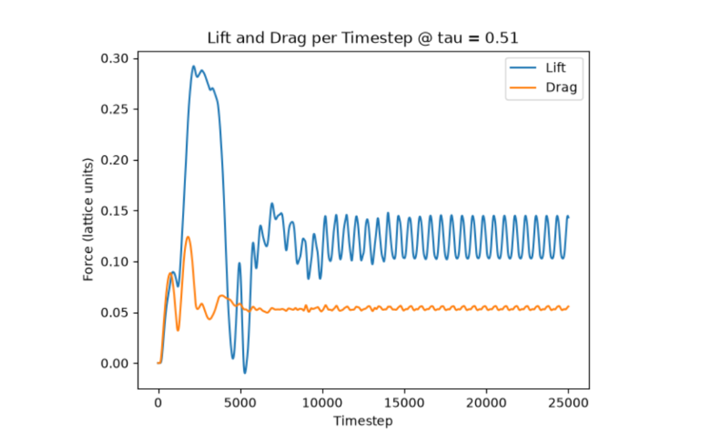

Project at a glance
The Problem
Early CFD exploration often requires substantial setup before a geometry can be analyzed. This project investigates a lightweight, interactive solver that converts user-defined geometry into interpretable flow fields and aerodynamic trends while keeping the underlying numerical method visible.
What I Engineered
- Developed a D2Q9 lattice Boltzmann solver from the governing distribution functions rather than wrapping an existing CFD package.
- Implemented inlet, outlet, wall, and interpolated curved-boundary treatments; Smagorinsky subgrid modelling; and momentum-exchange lift and drag extraction.
- Built interactive geometry drawing, breadth-first-search autofill, NACA airfoil import, flow-field visualization, and automated force-history analysis.
- Ported the solver from Python to C++, reducing runtime by approximately 15× before further compiler optimization.
NACA 0012, Re = 2,000: St = 1.1895 versus 1.1706 published (1.6% difference); mean CL = 0.370 versus 0.355 (4.1% difference).
Cylinder, Re = 150: CD = 1.409 versus 1.39 published (1.4% difference); St = 0.195 versus 0.183 (6.6% difference).
Current scope: two-dimensional, incompressible, low-Mach-number external flow. Validation is case-specific and does not imply general-purpose CFD accuracy.

From numerical method to working solver
I began by comparing finite-difference, finite-volume, and lattice Boltzmann approaches against the project requirement: accept varied geometry without forcing a beginner to generate a body-fitted mesh. I selected LBM because its regular lattice makes geometry insertion, local updates, and future parallelization comparatively direct, while remaining well suited to incompressible external-flow visualization.
The solver advances nine particle-distribution populations per node through collision and streaming. Macroscopic density and velocity are reconstructed from those distributions, while viscosity and Reynolds number are controlled in lattice units through the relaxation time. I first implemented and tested the method in Python, then rewrote the solver in C++ once numerical behaviour had stabilized.
Boundary conditions and stability
Most of the development effort was not the base D2Q9 loop, but making open-domain simulations behave physically. I tested Zou–He and equilibrium inlets, convective and non-equilibrium-extrapolation outlets, slip-symmetry far-field boundaries, and multiple bounce-back formulations. The current prototype uses a smoothed equilibrium inlet, a non-equilibrium-extrapolation outlet, and interpolated bounce-back at solid surfaces.
At low relaxation times and higher Reynolds numbers, reflected disturbances and high-wavenumber modes caused non-physical streaking and eventual divergence. I diagnosed the instability through domain-size studies, boundary-condition comparisons, and local-velocity behaviour, then added a Smagorinsky subgrid model to increase local effective viscosity only where the flow required stabilization. This allowed cases near τ = 0.51 to remain stable without applying the severe global damping seen in earlier versions.
Geometry and aerodynamic loads
Users can draw arbitrary obstacles on a grid; breadth-first search fills closed shapes automatically. Airfoil coordinates can also be imported directly. For curved surfaces, I fitted and sampled the geometry to determine link distances for interpolated bounce-back, reducing the geometric error of a purely stair-stepped wall. Lift and drag are recovered with the momentum-exchange method and recorded as time histories for transient and frequency analysis.
C++ port and computational performance
A direct Python-to-C++ port produced an approximately 15× speedup. Compiling the C++ implementation with -O3 reduced a 400 × 200-node, 1,000-step test from 120.07 s in the debug build to 3.18 s without plotting. The larger 1,200 × 600-node validation cases ran at approximately 45–51 ms per time step. The next performance stage is a GPU-native update kernel with fused collision and streaming and more efficient memory access.
Validation
Testing more than visual plausibility
I used two complementary benchmarks. The airfoil case tests separated flow, unsteady lift, and chord-based shedding frequency around an aerodynamic geometry. The cylinder case tests a canonical bluff-body wake with well-established drag and Strouhal values. Frequencies were calculated from repeated force-history peaks after discarding the initial transient.
NACA 0012 · Re = 2,000 · α = 8°
- Domain: 1,200 × 600 nodes; chord: 130 nodes; 45,000 time steps.
- Mean CL = 0.3696 versus 0.355 published: 4.1% difference.
- Mean CD = 0.1320 versus 0.118 published: 11.8% difference.
- St = 1.1895 ± 0.0271 versus 1.1706 published: 1.6% difference.
- 17 detected peaks and 16 complete shedding periods; uncertainty of the mean St = ±0.0068.
Circular cylinder · Re = 150
- Interpolated-boundary result: mean CD = 1.4089 versus approximately 1.39 published: 1.4% difference.
- St = 0.1951 versus 0.183 published: 6.6% difference.
- Mean CL = −0.0069, close to the expected zero mean for a symmetric cylinder.
- Drag oscillated at twice the lift frequency, consistent with alternating vortex shedding.
Reference for the airfoil comparison: D. F. Kurtulus, “Vortex flow aerodynamics behind a symmetric airfoil at low angles of attack and Reynolds numbers.”
Pictures


Engineering Challenges + Solutions
Open-boundary reflections
Early pressure and force histories drifted because disturbances reflected from the outlet and interacted with the body. I compared multiple inlet/outlet formulations, initialized the domain at the freestream equilibrium state to reduce the startup transient, and adopted a non-equilibrium-extrapolation outlet for the current solver.
High-Reynolds-number instability
As τ approached 0.5, high-speed local regions produced streaking and eventual divergence. Domain studies separated blockage effects from collision instability, and a Smagorinsky subgrid model supplied localized dissipation while preserving resolved wake structures.
Curved geometry on a Cartesian lattice
Simple bounce-back turns an airfoil or cylinder into a stair-stepped surface, contaminating wall forces. I added spline-based surface sampling and interpolated bounce-back, then compared interpolated, halfway, and full bounce-back formulations on the cylinder benchmark.
Separating credible results from convincing images
Qualitative vortices were not treated as validation. I added momentum-exchange force extraction, transient rejection, automated peak detection, period statistics, and uncertainty reporting, then compared lift, drag, and shedding frequency against published airfoil and cylinder cases.
Current limitations
The solver remains a two-dimensional, low-Mach-number prototype. Force coefficients—especially airfoil drag—are less accurate than shedding frequency, and the cylinder frequency result is based on a limited number of complete cycles. These gaps define the next work: larger-domain and resolution studies, expanded benchmark coverage, improved curved-wall treatment, and GPU parallelization.